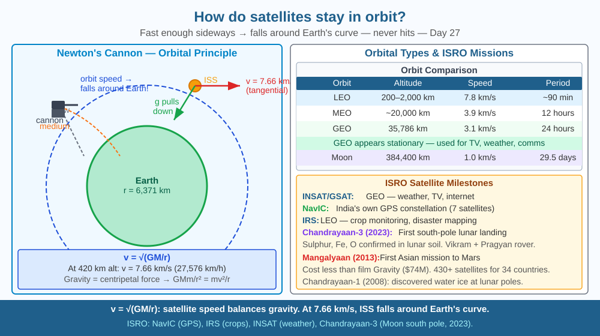

By the end of this lesson, you should be able to explain why a satellite doesn't fall despite gravity, describe orbital velocity, and predict what happens when a satellite slows down due to drag.
The ISS (International Space Station) orbits at 420 km above Earth. Gravity at that altitude is still about 88 % of surface gravity — the ISS is being pulled toward Earth constantly. So why doesn't it fall? And why do astronauts inside float weightlessly, if gravity is still pulling them?
Newton's cannon thought experiment: Imagine firing a cannonball horizontally from a very tall mountain. Fire it slowly — it curves down and lands nearby. Fire it faster — it lands farther. Fire it at just the right speed — the ball curves down exactly as fast as Earth's surface curves away from it. The ball keeps falling but never hits the ground. It is in orbit.
Orbital velocity: At 420 km altitude, the ISS must move at about 7.66 km/s (27,576 km/h) to maintain orbit. At this speed, gravity provides exactly the centripetal acceleration needed to keep the ISS curving around Earth.
The maths: - Gravitational force = centripetal force - GMm/r² = mv²/r - v = √(GM/r) - At r = 6,800 km (Earth radius + 420 km): v ≈ 7.66 km/s
Weightlessness explained: Astronauts float because they are in free fall — falling around Earth at the same rate as the ISS. Everything around them is falling together. There is no "support" — like falling in a lift that has cut its cable.
Geostationary orbit (GEO): At 35,786 km altitude, a satellite orbits once every 24 hours — matching Earth's rotation. It appears stationary from the ground. India's INSAT and GSAT communication satellites are in GEO. ISRO's PSLV launches satellites to low Earth orbit (LEO) and geosynchronous transfer orbit.
Orbital decay: At low altitudes (under ~600 km), atmospheric drag slows the satellite slightly. This reduces orbital velocity → the satellite falls to a lower orbit → moves faster (closer to Earth). Eventually it re-enters the atmosphere and burns up.
Think of a satellite in orbit as a ball tied to a string, but the string is invisible and the ball never stops moving.
On the ground, when you throw a ball horizontally, gravity pulls it downward at 9.8 m/s². It hits the ground after a few seconds. Now imagine throwing it faster — it travels farther before landing. Keep increasing the speed and the ball lands farther and farther away.
Earth's surface is curved. At 8 km/s, something thrown horizontally drops exactly 5 metres downward every second — and Earth's surface also curves away downward by 5 metres every second at that distance. The ball falls forever but never arrives at the ground. That is orbit.
The key insight: a satellite is not being pushed up. It is not fighting gravity. It is falling continuously in a curved path that matches Earth's curvature. The moment you reduce its sideways speed (drag does this), the curve no longer matches — and the satellite spirals inward.
The included SVG shows Earth as a blue sphere at the centre. Three curved arrows trace different launch trajectories from the top of a mountain on the surface. The first (shortest arrow, labelled "7 km/s") curves down and strikes Earth — too slow. The second (medium arrow, labelled "7.66 km/s — LEO orbit") curves around Earth in a smooth closed loop, with the label "ISS path." The third (longest arrow, labelled "11.2 km/s — escape velocity") curves away from Earth and leaves the frame. A separate orbit ring shows the geostationary orbit at 35,786 km with a small satellite icon labelled "INSAT/GSAT" and a dotted line connecting it vertically to a dish antenna in India. The diagram includes the equation v = √(GM/r) and two data points: ISS at 7.66 km/s (420 km) and GPS at 3.87 km/s (20,200 km).

ISRO has launched over 430 satellites for 34 countries. India's own satellite fleet includes: - INSAT/GSAT: weather forecasting, TV broadcasting, internet (GEO at 36,000 km) - IRS (Remote Sensing): crop monitoring, disaster mapping, forest cover assessment (LEO at 600–900 km) - NavIC: India's own GPS navigation constellation (7 satellites) - Chandrayaan-1 (2008): discovered water ice on the Moon - Mangalyaan (2013): Mars mission, first Asian spacecraft to reach Mars, cost less than Hollywood film Gravity - Chandrayaan-3 (2023): first soft landing near the Moon's south pole
Orbit simulation: Tie a small rubber ball to a string (60 cm). Swing it in a horizontal circle above your head. The tension in the string acts like gravity — keeping the ball in circular motion. Now shorten the string: the ball moves faster in a smaller circle. Lengthen it: it moves slower in a larger circle. This mimics how satellites closer to Earth orbit faster (ISS at 7.66 km/s) than satellites further away (GPS at 3.87 km/s, Moon at 1.02 km/s).
A geostationary orbit seems magical — a satellite that hovers motionless above one spot. But it requires an extremely precise orbit: at exactly 35,786 km, with zero inclination. A satellite 1 km higher or lower will slowly drift east or west. Station-keeping (small thruster burns every few weeks) is required to keep it in place. When a satellite runs out of fuel for station-keeping, it is moved to a "graveyard orbit" 300 km above GEO to avoid interfering with working satellites. The Kessler syndrome describes a runaway scenario: one collision generates debris that causes more collisions, making entire orbital shells unusable. Space debris is a serious real-world problem, with over 27,000 tracked objects currently orbiting Earth.
Predict: ISRO's Chandrayaan-3 used multiple orbit-raising manoeuvres before leaving Earth orbit for the Moon. Each manoeuvre fired engines at a specific point in the orbit. At which point in an elliptical orbit — closest approach (perigee) or farthest point (apogee) — should a rocket fire to most efficiently raise the opposite end of the orbit, and why?
Why doesn't a satellite fall to Earth even though gravity pulls on it?
Correct answer: C
Why is understanding orbital mechanics more useful than just knowing satellites stay up?
Correct answer: C
If a satellite were slowed down significantly by atmospheric drag, what would you predict?
Correct answer: B
The ISS orbits at 420 km altitude with an orbital speed of 7.66 km/s. Atmospheric drag causes it to lose about 2 km of altitude per month without correction, requiring periodic "reboost" burns from visiting cargo spacecraft.
(a) Using v = √(GM/r), calculate the orbital speed needed at 350 km altitude (r = 6,721 km, GM = 3.986 × 10¹⁴ m³/s²). Is this faster or slower than at 420 km — and why? (b) If drag slows the ISS by 1 m/s per week, estimate how many weeks before it would need a reboost to avoid re-entry within 3 months. (c) Chandrayaan-3 orbited the Moon at 100 km altitude before landing. The Moon's GM = 4.9 × 10¹² m³/s² and radius = 1,737 km. Calculate the orbital speed required at 100 km altitude above the Moon and compare it to the ISS orbit speed — what does this tell you about the Moon's gravity relative to Earth's?
Astronauts on the ISS are not weightless because gravity has disappeared — at 420 km altitude, gravity is still 88 % as strong as on the surface. They are weightless because they are in continuous free fall, and the ISS falls with them. A scale under an astronaut's feet reads zero — not because there is no gravity, but because both the astronaut and the scale are accelerating downward at the same rate. This is the same sensation you feel in the first second of a lift dropping: a momentary lightness as you and the lift fall together. For ISS astronauts, that sensation lasts the entire mission — months at a time — which is why they lose bone density and muscle mass without constant exercise.
A satellite stays in orbit not by fighting gravity but by falling around Earth so fast sideways that it keeps missing — reduce that sideways speed and gravity wins, pulling it back into the atmosphere.